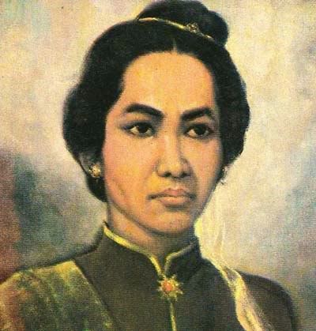

| NAMA PAHLAWAN | DESKRIPSI | MEDIA |
|---|---|---|
| Cut Nyak Dien |
Cut Nyak Dien adalah seorang Pahlawan Nasional Indonesia dari Aceh yang berjuang melawan Belanda pada masa Perang Aceh. Setelah wilayah VI Mukim diserang, ia mengungsi, sementara suaminya Ibrahim Lamnga bertempur melawan Belanda. Sumber : wikipedia.com |
 |
| R.A. Kartini |
Raden Adjeng Kartini à tau sebenarnya lebih tepat disebut Raden Ayu Kartini adalah seorang tokoh Jawa dan Pahlawan Nasional Indonesia. Kartini sebagai pelopor kebangkitan perempuan pribumi. Sumber : wikipedia.com |